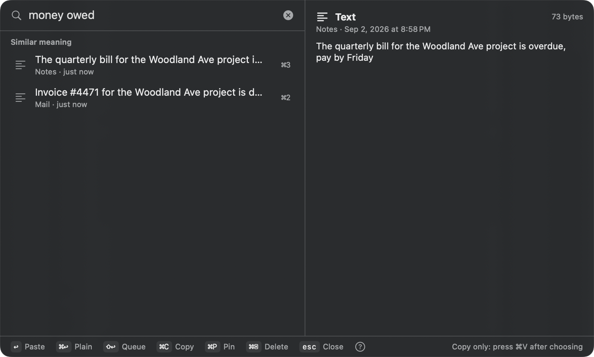
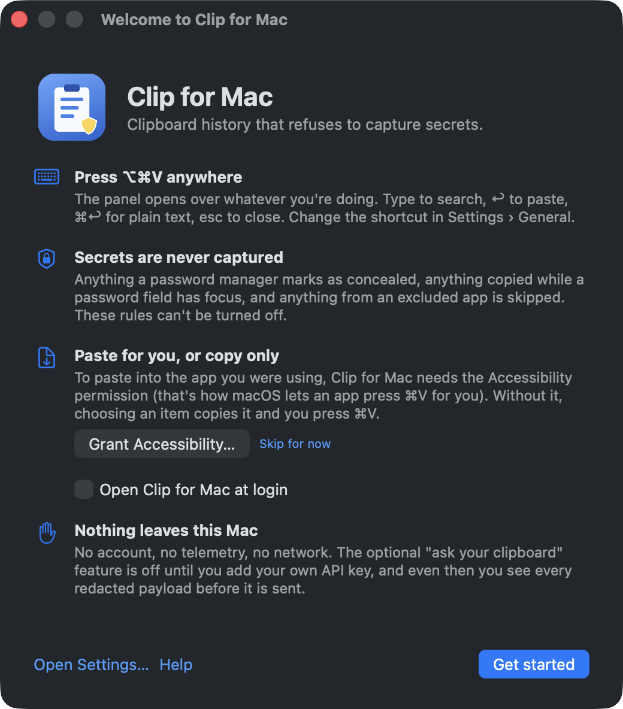
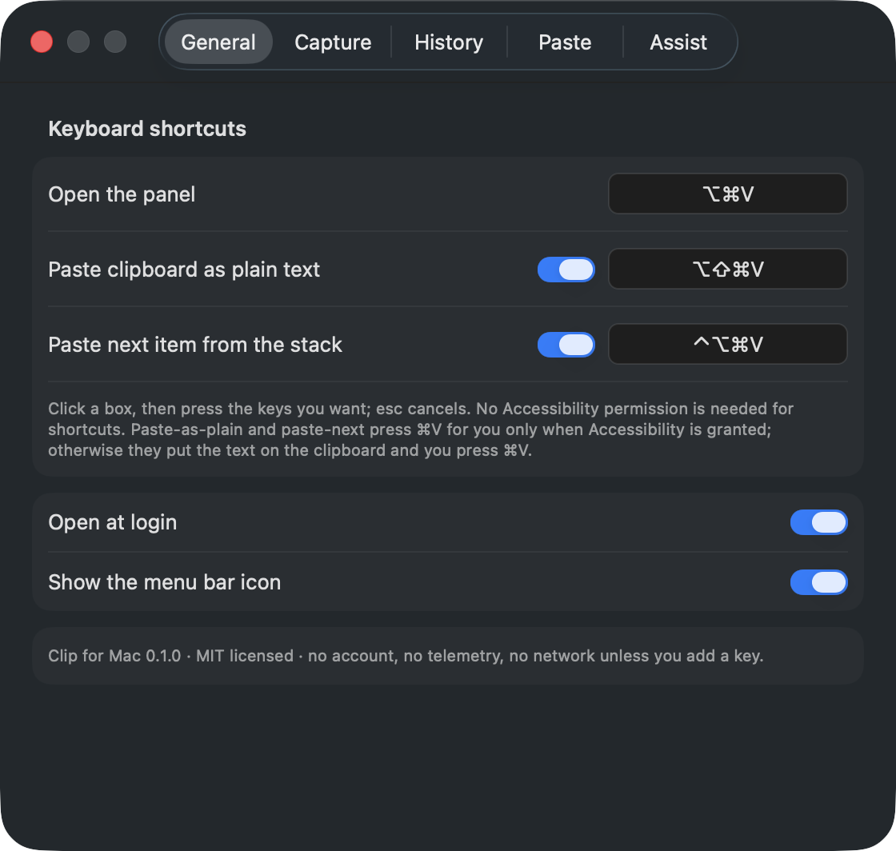
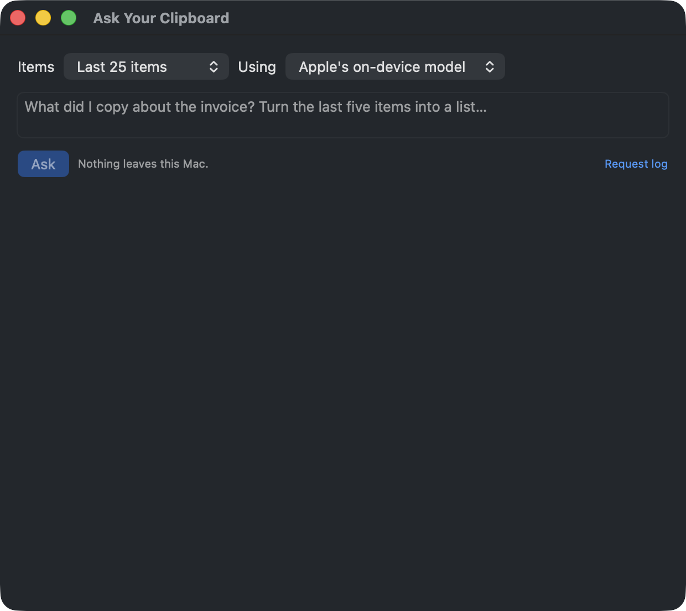

Why another clipboard manager
Every clipboard manager keeps a plain-text diary of everything you copy. That includes the password your password manager just put on the clipboard. Clip for Mac starts from the other end: the rules about what it will not keep are the product, and they have no off switch.
- Password managers are honored. Anything marked concealed or transient with the
org.nspasteboardconvention (1Password, Bitwarden, Keychain Access, Strongbox, KeePassXC and others) is skipped. - Password fields are honored. Anything copied while macOS secure input is on is skipped, and the menu bar icon shows a lock while that is true.
- Excluded apps are honored. The list ships with the common password managers; add any app.
- Secrets that slip through are flagged with a shield: API keys, tokens, private keys, card numbers,
password=. One command forgets them all.
What it does well
⌥⌘V, anywhere
The panel opens over what you're doing without stealing focus. Type, ↩ to paste, ⌘↩ for plain text, ⌘1–9 for the top nine, esc.
Search by meaning
"money owed" finds the invoice and the bill without either word. On-device word embeddings, no network, on by default.
Paste stack
Queue five things with ⇧↩, then ⌃⌥⌘V pastes them one after another into five fields. ⌥⇧⌘V pastes anything as plain text.
Pins and snippets
Pinned items never expire. Give one a keyword and clipmac snip prints it, or export pins as macOS Text Replacements.
Ask your clipboard
Apple's on-device model on macOS 26, or your own Anthropic or OpenAI key: you pick the items, see the redacted payload, confirm every request, and it is logged.
A real command line
clipmac with --json everywhere, exit codes, a man page, and a clipmac:// URL scheme for Shortcuts.


Honest about what leaves the Mac
Nothing, unless you add your own API key. No account, no telemetry, no crash reporting, no background update checks. The database is not encrypted by the app itself, because full-text search cannot index ciphertext; it relies on FileVault and tells you when FileVault is off. The whole privacy page fits on one screen: PRIVACY.md.
Compared
| Clip for Mac | Maccy | Raycast | Paste | |
|---|---|---|---|---|
| Honors password-manager concealed types | Yes | Yes | Yes | Yes |
| Skips secure-input (password field) copies | Yes | No | No | No |
| Flags secret-shaped items, forget them in one go | Yes | No | No | No |
| Search by meaning, on-device | Yes | No | No | No |
| Redacts before any cloud request, shows the payload | Yes | n/a | No | No |
| Paste stack | Yes | No | No | Yes |
| Command line and URL scheme | Yes | No | Partial | No |
| Price | Free, MIT | Free, MIT | Free tier | Subscription |
Comparison from each product's public documentation at the time of writing; corrections welcome.
Install
brew install --cask clipmac # once the cask is published # or: download the DMG from the releases page, drag to Applications, press ⌥⌘V # or build it yourself, no Xcode needed: git clone https://github.com/keithadler/clipmac && cd clipmac && ./build-app.sh --install --run
macOS 14 Sonoma or later, Apple silicon and Intel. The Accessibility permission is optional: it lets the app press ⌘V for you; without it, choosing an item copies and you paste.

